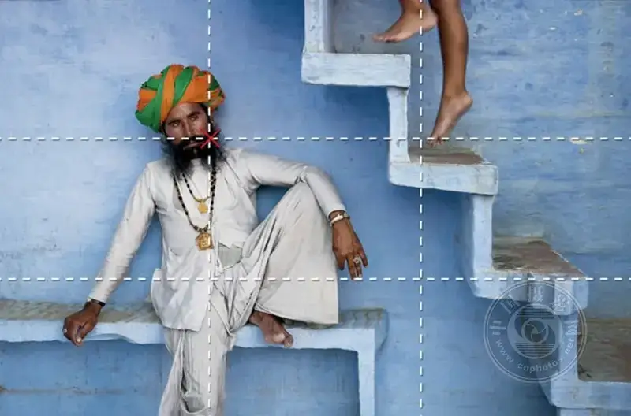
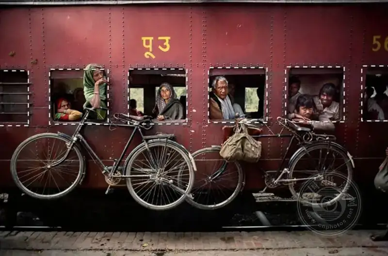
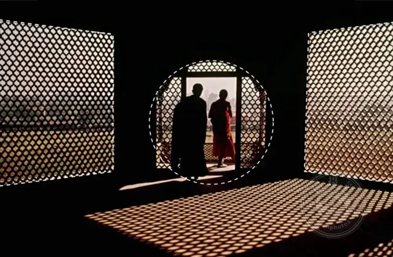
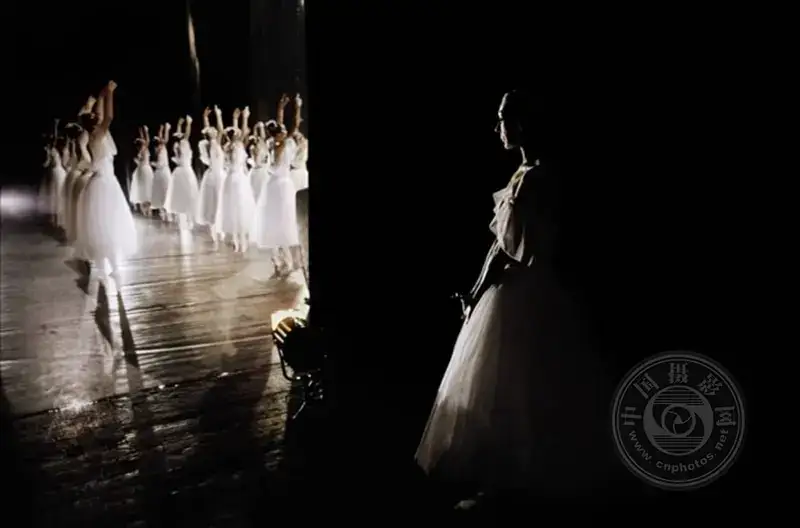
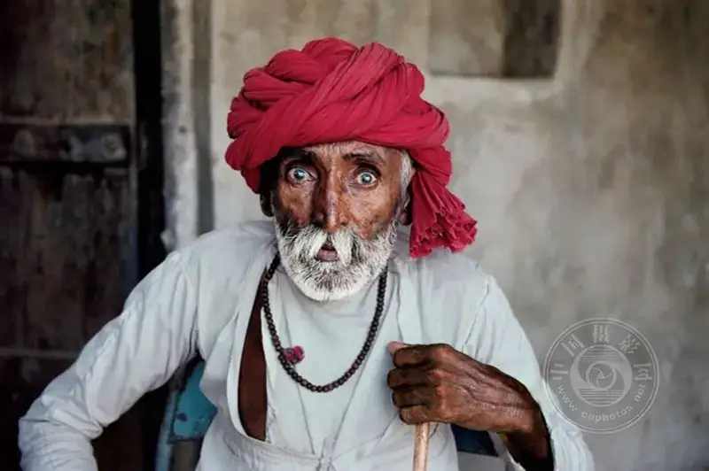
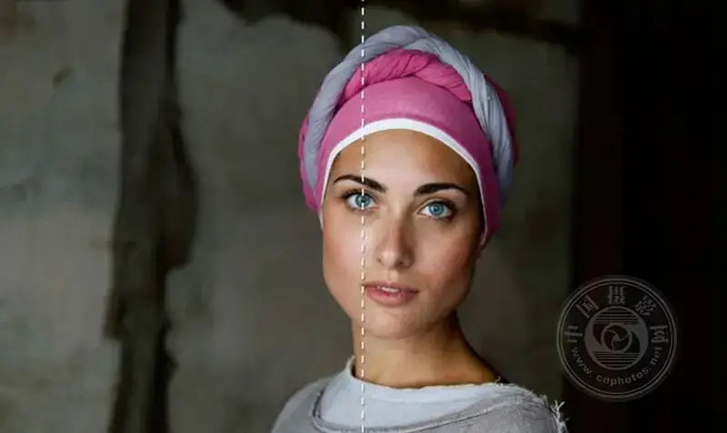
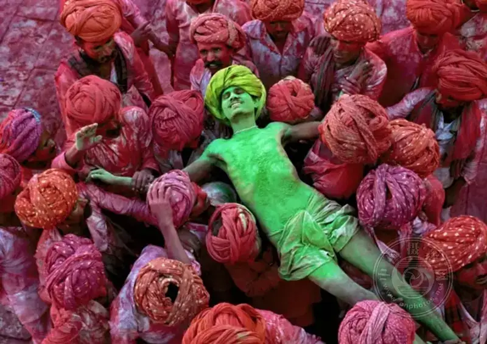
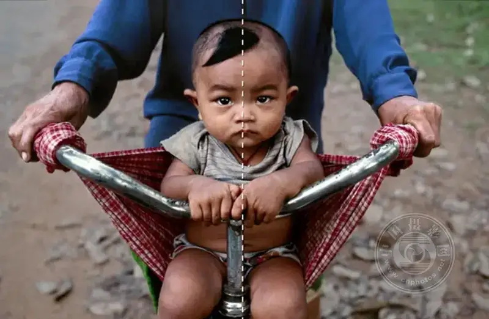

Steve McCurry is one of the legends of photography. He is an iconic figure in street, travel, and documentary photography. His name is well known not only among experienced photographers but also among ordinary people who love the art. As a lasting presence in photography today, McCurry's work speaks for itself.
In this article, we draw ideas from the signature photos of Steve McCurry. We show you nine valuable photography tips.
1. The rule of thirds

Place the focus on the crossing point of the thirds lines.
2. Leading lines
Use natural lines to draw the eye into the frame.
3. Diagonals
Use diagonals to create a sense of movement.
4. Framing

Use natural frames, such as windows and doors.

5. Subject against background
Find the contrast between the subject and the background.

6. Fill the frame
Move close to your subject.

7. Center the leading eye
Place the leading eye at the center of the image.

8. Repetition
Repeated patterns are a form of beauty.

9. Symmetry

Symmetry is pleasing to the eye.
Steve McCurry said: "It is important to remember composition, but rules are also made to be broken. So the key is to enjoy taking photos, and to shoot in your own way and style."